| 상품 | 군마트 | 쿠팡 | 차이 | |
|---|---|---|---|---|
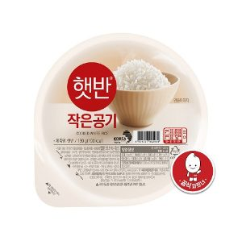 | 햇반 130g | 640원 | 1,438원 | -56% |
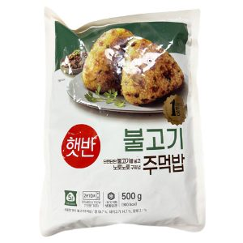 | 햇반 불고기주먹밥 500g | 4,300원 | 7,775원 | -45% |
| 인테이크 모닝죽 초당옥수수 130g | 990원 | 1,644원 | -40% | |
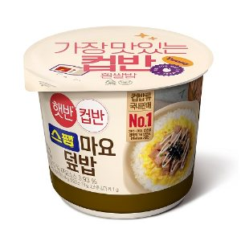 | 씨제이제일제당 햇반컵반 스팸마요덮밥 219g | 2,210원 | 3,480원 | -36% |
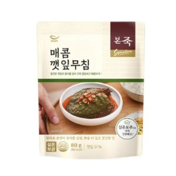 | 본죽 시그니처 매콤깻잎무침 80g | 2,200원 | 3,170원 | -31% |
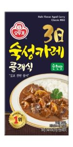 | 오뚜기 숙성카레 순한맛 200 g | 3,510원 | 4,980원 | -30% |
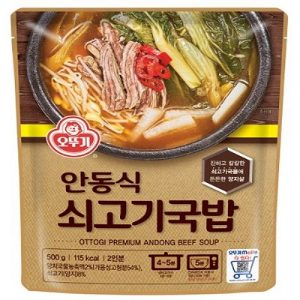 | 오뚜기 안동식 쇠고기국밥 500g | 3,220원 | 4,570원 | -30% |
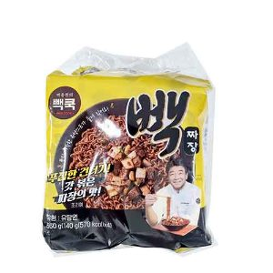 | 더본코리아 빽쿡 빽짜장 560g 140g x 4개 | 3,840원 | 5,160원 | -26% |
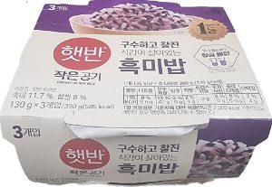 | 씨제이제일제당 햇반흑미밥 130g*3ea | 2,410원 | 3,145원 | -23% |
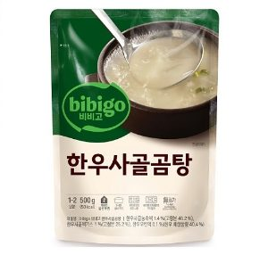 | 씨제이제일제당 bibigo비비고한우사골곰탕 500g | 1,230원 | 1,593원 | -23% |
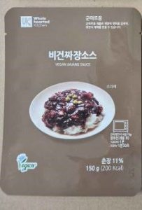 | 화경 비건짜장소스 150g | 1,730원 | 2,225원 | -22% |
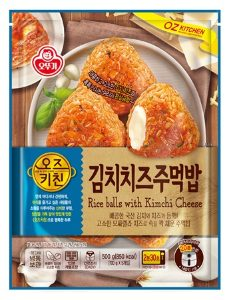 | 오뚜기 오즈키친 김치치즈주먹밥 500g | 4,680원 | 5,980원 | -22% |
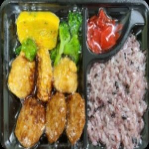 | 에이치앤파이 찰흑미밥 텐동 300g | 5,360원 | 6,767원 | -21% |
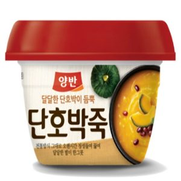 | 동원 양반 호박죽 285g | 1,430원 | 1,757원 | -19% |
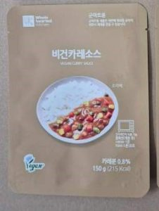 | 화경 비건카레소스 150g | 1,940원 | 2,284원 | -15% |
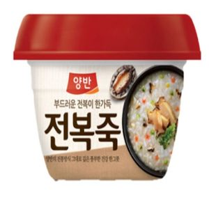 | 동원 양반 전복죽 287.5g | 1,920원 | 2,090원 | -8% |
| 오뚜기 오즈키친 치킨마크니 180 g | 1,840원 | 1,990원 | -8% | |
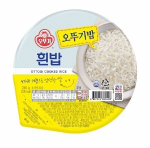 | 맛있는오뚜기밥 210g | 870원 | 933원 | -7% |
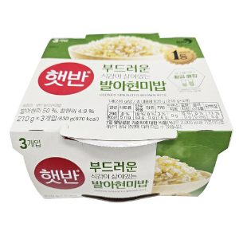 | 햇반 발아현미밥 210gx3ea | 3,300원 | 3,446원 | -4% |
| 인테이크 모닝죽 단호박 130g | 1,740원 | 1,644원 | +6% | |
즉석밥·간편식 말고 다른 것도
더 이상 직접 비교하지 마세요.
군마트 상품을 한곳에 모아 PX 가격과 온라인 가격을 쉽게 비교할 수 있습니다.
이게 실제 화면이에요. 상품을 누르면 바로 열립니다.
국방가족 분들이 조금이라도 편하게 군마트를 이용하셨으면 하는 마음으로 만들었습니다.
국방가족을 위한 작은 재능기부입니다.